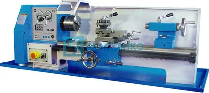
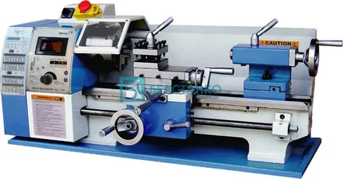
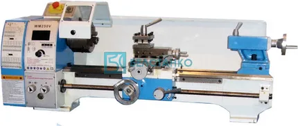
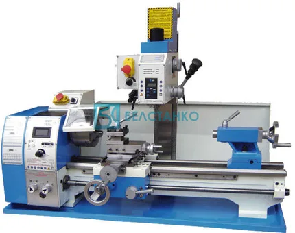
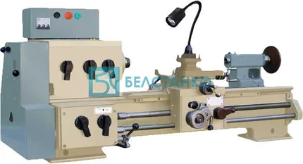

ВСТ-028
Станок настольный универсальный токарный
775 200 ₽Станок настольный универсальный токарный
775 200 ₽
Станок токарный
208 000 ₽
Станок токарный
Цена по запросу
Станок настольный токарный
142 425 ₽
Станок настольный токарный
134 160 ₽
Станок настольный токарный
112 330 ₽
Станок настольный токарный
Цена по запросу
Станок настольный токарный
144 420 ₽

